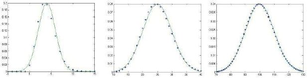
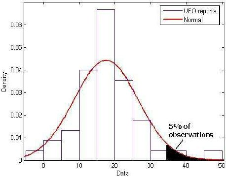

UFO waves studies usually focused on the search for a periodical pattern or some other feature giving insights about the nature of UFO phenomena and the forecasting of UFO waves. Here we prefer a more modest approach, aiming at real-time UFO waves monitoring: we describe a statistical instrument specifically designed to signal the presence of a significantly high number of UFO reports.
To do that we need to seasonally adjust the UFO data and to find out which statistical distribution they follow. Knowing the distribution of seasonally adjusted UFO data, we can decide whether a number of UFO reports is significantly high from a statistical standpoint, thus signalling the likelihood of a wave occurring.
UFO waves studies went along with ufology since the beginning; it couldn't be otherwise, as the UFO era just started with a "wave" in July 1947 in the USA.
Studying UFO waves usually aimed at seeking specific periodic patterns or other features able to provide insights about the nature of the UFO phenomenon. A basic aim was of course the ability to forecast a wave, allowing for the falsification of the proposed forecasting model. At the current state of the art, it seems that no theory is able to explain all the UFO waves data available.
A different problem relates to the wave definition criteria: what parameters we have to consider, and what threshold should they exceed to let us speak of "waves" in a proper way? UFO waves are usually recognized after they occurred, for example comparing the number of sightings during the alleged wave with the number of sightings during "normal" periods.
However, it seems important to be able to recognize an UFO wave when it is still happening, and even better when it just started: this ability allows ufologists to study the phenomenon with a greater awareness and, hopefully, a greater organization than otherwise possible.
In this article we therefore prefer a more modest approach: if we cannot forecast UFO waves, can we at least real-time monitor them? It's apparent that any ufologist who regularly follows the evolution of the UFO phenomenon has an opinion about whether a wave is actually occurring.
However, a criterion based on measurable parameters would be preferable, as it would be less subjective than the personal intuition. During 2003, following a suggestion by Giuseppe Stilo (CISU), we designed a statistical tool to monitor the frequency of UFO reports collected by CISU from different sources Abraini, G. : "Come monitorare le ondate". The tool, although useful, proved to be not fully reliable, as it was too much dependent on data seasonality and it was based on the assumption of Poisson-distributed UFO reports: this assumption proved to be incorrect, as section 4 will explain.
In order to improve that first monitoring tool, a three-step approach was defined:
Further discussions at the CISU 2005 annual meeting, devoted to UFO waves, prompted suggestions on how to examine UFO data in a wave context.
In the following, section 2 describes the data used; section 3 describes the seasonal adjustment; section 4 describes the search for a suitable statistical distribution; section 5 describes how to apply the previous results to the wave monitor; section 6 concludes.
Since 2000 the CISU put in place a mailing list to collect every piece of information related to Italian UFO sightings. However, a monthly update of the Italian catalogue started only towards the end of 2001. Looking at raw monthly data one can notice a distortion in Month over Month (MoM) and Year over Year (YoY) comparisons: if we are in September 2005, for example, we had two months to collect July sightings and only one month to collect August sightings. Therefore it's not surprising to see that in August there were less sightings than in July; likewise, it's not surprising that in August 2005 there were less sightings than in August 2004, for we had one whole year to collect August 2004 reports.
To avoid such distortion, only first-update figures have been considered: e.g. the number of reports attributed to February 2003 is that known at the monthly update of March 2003, not the last figure available now. Let's call this adjustment "update-date adjustment" (uda). As stated before, the monthly update is available only from the end of 2001: therefore, only UFO reports uda since January 2002 have been considered in the analysis.
The Italian catalogue includes reports that relate to strict-sense UFOs as well as conventionally explainable sightings of objects not recognized by the witness (wide-sense UFOs), reports of events the witness considers related to the UFO phenomena (e.g. crop circles), photos of objects unseen by the photographer and so on. The Italian catalogue thus collects a very broad range of reports, but the informations are stored in such a way that the ufologist can easily distinguish them according to his criteria.
Someone might object that some of these reports (e.g. abductions, crop circles, ORBs, etc.) have nothing to do with the real UFO phenomenon; some other people might remark that, since we are dealing with UFO waves, explained reports represent a "noise" that should be excluded from the analysis. My opinion is that, when we talk about UFO waves, we talk more about a social climate than a real increase in unexplained reports; and this social climate comprises any phenomenon the witnesses relate to the UFOs, not only classic "lights" or "objects". It is widely known, for example, that meteor flaps played a crucial role in the development of many UFO waves. But even if most sightings were due to meteors, nevertheless an UFO wave took place, because "everyone saw UFOs", no matter what UFOs actually were.
However, to prevent such critics, in the first two steps of the approach described in the introduction (seasonal adjustment and statistical distribution) we used data on both all reports available and only UFO reports, thus excluding reports of lights or objects without actual sighting (e.g. crop circles, photos of invisible objects, etc.) and reports potentially explained with ordinary causes (such as meteors, planes, balloons, etc.). What remains are reports of sightings of lights or objects not immediately explainable That doesn't mean of course that all those reports are unexplainable: at the moment and with the available data they are just not yet explained.
Moreover, a different distortion is caused by extensive flaps: when a big fireball is observed, we receive many reports related to the very same event; this inflates the number of reports, even if the number of actual UFO events is not particularly high. To avoid such distortions we used also data on events, rather than reports.
Therefore, the analysis have been performed on the following monthly data series:
In updating every month the Italian UFO Catalogue one can notice a recurrent increase of UFO sightings in the summer, as well as a recurrent decrease in the spring: this is typical of a seasonal phenomenon. Seasonality is a very well-known feature of many economic data: gross domestic product, prices, consumer confidence, industrial production, retail sales, these all are example of seasonal data. Also non-economic data can be seasonal: rainfall is an apparent example. Statistic methodology and software have been developed to take in account the seasonality and produce seasonally adjusted (sa) data To illustrate the concept of seasonality and seasonal adjustment, let's consider the Italian industrial production: this suffers a severe fall every August, not because of economic recession, but only because of holidays. Therefore, the economists seasonally adjust the data obtaining an industrial production which is not affected by the holidays effect: as such, the seasonally adjusted data better reflect the economic environment. The X-12 software has been used for the computations. It is freely available (along with documentation and research papers) from the US Census Bureau website..
| Month | Seasonal Factor |
|---|---|
| Jan | -2 |
| Feb | -8 |
| Mar | -15 |
| Apr | -23 |
| May | -6 |
| Jun | 12 |
| Jul | 22 |
| Aug | 29 |
| Sep | 19 |
| Oct | -2 |
| Nov | -10 |
| Dec | -17 |
The seasonal adjustment, through the computation of moving averages, splits the original data (X) in three components: an underlying "trend" (T), a "seasonal" factor (S) and an "irregular" component (I), such that the following relation holds:
X = T + S + I This is true only if an additive relationship holds between the three components. In some cases a multiplicative relationships is more suitable, in which case X = T * S * I. This is particularly useful when X (and thus its components in absolute terms) tends to increase over time: an example is the gross domestic product. UFO data from the Italian Catalogue proved to be quite stable over time, therefore the additive relationship looked more reasonable.
The seasonally adjusted series Xsa will therefore be: Xsa = X - S = T + I.
The most interesting outputs are of course T and S: the first gives insight on the current trend of UFO observations; we can have a declining trend even with increasing UFO reports, depending on the value of S and I. The second shows which months tend to be positively or negatively affected by seasonality: some months tend to have more sightings than others because of seasonality. The overall effect of the seasonality over one year should be neutral (the seasonal factors of each month sum up to zero).
The seasonal adjustment applied to Italian UFO data shows a statistically significant seasonality, especially for series 3 and 4 The F-statistic for all series is significant at 1% level, meaning that the probability of a wrong result from the test is less than 1%. See Appendix A. The seasonal factors are positive for months June to September, and negative for the remaining months: this holds for all the analysed series.
The strong seasonality in the summer is unmistakable, and seems consistent both with data from other researchers, and
with pre-2000 Italian data In the literature of UFO-applied statistics I've found only one article explicitly related to the seasonal
adjustment of UFO time series: it is F. Fernandes, J.M. Ferreira, "Análise da distribuição temporal do
fenómeno OVNI na península ibérica (1950-1977)". In the article the authors use a multiplicative model and
find a seasonal index greater than one for months from July to December, with a peak in August. However,
it is not clear how they compute the seasonal index.
Also A. Petukhov ("The UFO phenomenon in the mirror of statistics"), with only descriptive statistics, found
stable peaks in January and July based on 1900-1980 Russian data.
The SOBEPS ("OVNI: un phénomène parasolaire?"), using a slightly different approach on a world-wide
database from 1940 to 1976, found that the number of UFO sightings reach the yearly maximum mostly in
July and August.
Rutkowski and Dittman (UFOROM), in "The 2004 CANADIAN UFO SURVEY", conclude that the number of
UFO sightings "is not linked to warmer weather and the increase in potential witnesses in the outdoors" that
can be expected in the summer (page 13). However, the seasonal adjustment applied to 1989-2004
Canadian UFO data, shows that the seasonal effect is on average positive just in the summer months (July to
September), although the seasonal pattern shows some changes over time.
The seasonal adjustment had been also performed on 1946-1990 Italian data (all reports of known and
unknown objects): on average, the summer months show the strongest positive seasonality..-
Like many statistical procedures, seasonal adjustment is only an estimate of T, S, and I: as time goes on and new data are added, the previous estimates can change. Therefore, seasonally adjusted data can be used to make two types of comparison:
By the way, seasonally adjusted data could prove useful also to forecast the number of UFO reports or UFO events in the next months: since the irregular component, by definition, should be unforecastable, the best forecast of next month reports could be the forecast of the trend component plus the proper estimated seasonal factor.
That was the title of an article by E. Berger E. Berger, "Are UFOs Poisson-distributed?": the author used a sample of Austrian UFO cases to check whether their distribution was similar to the Poisson distribution. The Poisson distribution is a random distribution for Bernoulli trials, i.e. trials that can have only two outcomes: success and failure; the distribution is described by one parameter, the average number of successes in a unit of time Mathematically speaking, the Poisson distribution is derived from a Binomial distribution Bin(N, p), where N is the number of independent Bernoulli trials and p is the probability of success in each trial. When N tends to infinite and p tends to zero, with N*p=lambda, the Binomial distribution Bin(N, p) becomes a Poisson distribution Poiss(lambda). Therefore the Poisson distribution is useful to describe random events that occur seldom themselves but depend on a great number of trials: for example, the probability that one person see a UFO is very small, but given the number of people (i.e. number of independent trials), there's a given probability that some UFO is actually seen over a certain period (day, week, month…)..
Berger's reasoning was simple and powerful: "In case the […] daily number of reports during a wave is Poisson-distributed we may conclude that the main characteristic of that wave is the broader documentation of usual, random observations stimulated by the press and social interaction […]. However, if the daily reports are no Bernoulli trials and not independent, one is right to postulate an ‘outside drive' for the rising and falling of the ‘activity'" E. Berger, cit..
Berger's results, as corrected by Ballester-Olmos V.J. Ballester-Olmos, "On UFO and the Poisson distribution"., showed that the Austrian sample was significantly different from a Poisson sample. The same holds for raw Italian UFO reports or events: it seems that their distribution is quite different from the Poisson.
However, as previous section showed, UFO reports are to some extent seasonal: that means that non-seasonally adjusted data, while maintaining the same monthly average, show a greater variance because of seasonality The variance of a dataset is a measure of its variability. It is computed averaging the squared differences between each data and the sample average: Var= (1/(N−1)) Σ(N, i=1) (xi−moy(x))2. In a Poisson distribution, the average lambda is also equal to the variance of the population; thus, the distributions of seasonally and non-seasonally adjusted data cannot be both Poisson-distributed, for the average is the same but the variance is different.
Berger tested the null hypothesis In statistics, the hypothesis testing procedure distinguishes between a "null" hypothesis (the one we are interested in) and an "alternative" hypothesis: a proper statistical test let us decide whether reject or not reject (i.e. accept) the null hypothesis. of Poisson distribution on non-seasonally adjusted data: would the result have been different when applied to seasonally adjusted data?
Looking at the Italian seasonally adjusted series is more encouraging: the null hypothesis of Poisson distribution has been checked using a statistical test different from the one used by Berger. Berger used a Chi-squared test The Chi-squared test compares the actual number of observations with the expected value according to the null hypothesis, for each class of observations. For example, let's suppose there have been 3 months with less than 10 UFO reports, while according to the Poisson distribution there should have been 4 such months. The Chi-squared test compares the differences between actual and expected numbers for each class (the classes are "less than 10 UFO reports", "11 to 20 UFO reports" and so on, for example) and returns a number that allows to reject or not reject the null hypothesis. The point is that the choice of the classes is to some extent subjective, and the result of the Chi-squared test depends on the classes chosen., which suffers from some limitations and seems too much dependent on the choice of classes for which we need to compute the expected value under the null hypothesis.
That's why we chose to use a different test, the Kolmogorov-Smirnov: this compares the cumulative distribution functions (cdf) The cumulative distribution function of a dataset is a function that cumulates the percentage of observations less than or equal to any given value X. For example, in our UFO data we can have that 11% of the months have X<=10 (at most 10) UFO reports; 24% of the months have X<=20 reports; 28% of the months have X<=30 reports; and so on. Thus the cdf will have value 0.11 at X=10, 0.24 at X=20, 0.28 at X=30 and so on. In general the cdf has values ranging from zero to 1 (for example if the maximum number of monthly reports is 119, then 100% of the months have at most 119 reports, and the cdf has value 1 when X=119). of the actual data and of the null hypothesis, and computes the maximum difference between the two functions. Like the Chi-squared test, also the Kolmogorov-Smirnov has at least one drawback, but nevertheless it's more reliable The drawback is that the test is designed for continuous distributions, while the Poisson is a discrete distribution, i.e. the probabilities can be computed only for integer values. However, extensive simulations show that the Kolmogorov-Smirnov test applied to discrete distributions reject more often than usual the null hypothesis when this is true: that means that whenever the test does not reject the null, the result should be absolutely reliable.. The test, when applied to seasonally adjusted UFO data, does not reject the null hypothesis of Poisson-distributed data. This holds in particular for the series 3 and 4, as Appendix B shows.
|  |
However, there is a problem: when the average number of monthly reports is too high, the Poisson distribution becomes almost identical to a normal distribution The normal, or Gaussian, distribution is one of the best known distribution: bell-shaped, it is often used to describe measurement errors, which concentrates around the mean with a certain dispersion., as figure 2 shows: unfortunately, the number of monthly reports in seasonally adjusted series is just so high that a Poisson distribution with that average is very similar to a normal distribution.
So, the Kolmogorov-Smirnov test seems inconclusive for our purposes: it tells us that the actual data uda sa fit well enough the Poisson distribution, but it would also tell that they fit the normal distribution as well. We cannot decide whether the data fit the Poisson distribution more than the normal one, or viceversa We could discriminate between Poisson and Normal distributions only if the average number of reports is low: using a weekly frequency could serve for the purpose, but unfortunately it is difficult to compute seasonally adjusted data on a weekly frequency. An attempt to compute seasonally adjusted weekly data resulted in a controversial outcome.. However, the results seem encouraging as they at least do not reject the Poisson distribution hypothesis: if this is the case, the result should be interpreted in the sense that UFO reports and events follow a random process, on top of which seasonal factors are applied. Seasonal factors, plus IFO and no-sighting reports make the underlying random structure hidden in a sociological over-structure, more difficult to interpret.
The combined results of seasonal adjustment and statistical distribution of UFO reports and events let us prepare a simple and useful tool for monitoring UFO waves. The basic principle is the same of the tool used for the past two years G. Abraini, cit.: the statistical distribution let us compute the threshold above which the number of UFO reports is deemed statistically significant; the seasonally adjusted data let us avoid false signals due to seasonality, and a more reliable threshold.
As far as the statistical distribution is concerned, we could use the Normal distribution as well as the Poisson distribution: since we cannot discriminate between them, the computed threshold would be very similar for both distributions. As an alternative, we could also use the empirical cdf In contrast with a theoretical cdf, the empirical one doesn't rely on a mathematical formula but only on the actual observed data: as such, it can be to some extent "irregular"., which takes in account also the extreme values that we could observe in the actual data: because of that, the threshold computed with the empirical cdf would be higher than the one computed with a Poisson or Normal distribution.
To compute the absolute threshold we need to set a threshold in terms of relative frequency: for example, one may decide that a wave occurs only once every 100 months; that means that the relative frequency of the wave is 1% It would be nice to set this frequency threshold based on historical data: for example, if in the past 50 years (600 months) there have been 23 months deemed as UFO waves, the relative frequency should be 3,8%. However, as far as I know such computations do not exist on a historical basis.. In statistics, a usual threshold is set at 5%, meaning that there is 5% probability to observe a UFO wave: therefore we can compute the absolute value such that there is 5% probability to observe an even higher value. As said above, if there are extreme values the empirical cdf would provide the greatest of such thresholds (at least for small probabilities), compared to theoretical cdfs: so, thresholds computed with the empirical cdf would be more conservative than others, because it's more difficult to observe values greater than that threshold. That's why we decided to use the empirical cdf in monitoring UFO waves.
|  |
In practice, the monitoring tool will work this way:
Now, if the next month the actual number of UFO reports/events is greater than 36, we can say that the number is significantly high from a statistical viewpoint: therefore, we can say that a UFO wave is likely (at 5% probability) occurring. The following figure explains the concept in graphical terms, only for explanation purposes.
Past ufological research seems to have focused on forecasting UFO waves: the ability to predict future waves certainly fascinates UFO researchers, but the task proved to be much difficult. Not only the occurrence of UFO waves does not seem to follow any recognizable rule, but we must be aware that UFO reports dynamics indicates a quite strong seasonality over time, which makes even more difficult understanding UFO wave patterns.
In this article we chose to take a more humble approach: if we cannot forecast UFO waves, can we at least monitor them? To monitor UFO waves we need to clean the data, to remove accidental reports (e.g. photos of object unseen by the photographer), to consider UFO events rather than UFO reports, and above all to remove the seasonality present in the raw data. We also need to find a statistical distribution the data fit well in: this allows us to recognize with a proper statistic measure whether the number of UFO reports actually received is significantly high or not.
After removing the seasonality, data seem to fit well enough both a Poisson and a Normal distribution: this is because, for high average number of UFO reports, the Poisson and Normal distribution almost coincide. Given this uncertainty and to have a more conservative decision rule, the empirical distribution looked more suitable to verify whether the number of incoming reports is actually "high" or not. This is done computing a threshold for significantly high number of reports and taking in account also the seasonal effect of each month: a high number of reports is considered as a signal that an UFO wave is likely occurring.
No real back-test has been performed, due to lack of data: however, a simple application of the procedure to seasonally adjusted 1946-1990 Italian UFO reports proved that the monitoring tool is able to detect the main UFO waves occurred in Italy (Appendix C).
Result of the F-test for seasonality significance, as at November 2005.
For each analysed series is shown the value of the F-statistic and the associated p-value (if less than 5% the seasonality is present at a significant level, if greater than 5% the seasonality is not present at a significant level). The null hypothesis is "no seasonality present".
All UFO and IFO reports, uda
F-test: 3.894
p-value: 0.11%
All UFO and IFO events, uda
F-test: 7.548
p-value: 0.00%
Only UFO reports, excluding no-sighting reports, crop circles, etc., uda
F-test: 7.656
p-value: 0.00%
Only UFO events, excluding no-sighting events, crop circles, etc., uda
F-test: 7.598
p-value: 0.00%
Series 2, 3 and 4 have the lowest (most significant) p-value, therefore they are the series for which the seasonality is most evident.
Result of the Kolmogorov-Smirnov test for Poisson distribution, as at November 2005.
For each analysed series is shown the null hypothesis, the Kolmogorov-Smirnov (KS) test statistic, and the associated p-value (if less than 5% we reject the null hypothesis, i.e. the data are not Poisson-distributed; if greater than 5% we cannot reject the null hypothesis, i.e. look Poissondistributed).
All UFO and IFO reports, uda
Null Hypothesis: Poiss(41)
KS-test: 0.1885
p-value: 6.65%
All UFO and IFO events, uda
Null Hypothesis: Poiss(33)
KS-test: 0.1569
p-value: 18.92%
Only UFO reports, excluding no-sighting reports, crop circles, etc., uda
Null Hypothesis: Poiss(17)
KS-test: 0.1367
p-value: 33.30%
Only UFO events, excluding no-sighting events, crop circles, etc., uda
Null Hypothesis: Poiss(17)
KS-test:
0.1312
p-value: 38.25%
Series 3 and 4 have the highest (least significant) p-value, therefore they are the most likely Poisson-distributed data.
Result of the tool back-test, as at October 2005.
It is not a real back-test, due to lack of data: rather, it's only an evaluation of the tool's ability to signal the UFO waves based on 1946-1990 data. The back-test procedure has been as follows:
And here's the result; the following are the "wave" months highlighted:
Aug/1947
Mar/1950
Apr/1950
May/1950
May/1952
Jun/1952
Jul/1952
Aug/1952
Oct/1954
Nov/1954
Dec/1954
Aug/1957
Jul/1967
Aug/1968
Feb/1971
Oct/1971
Sep/1973
Oct/1973
Nov/1973
Dec/1973
Jan/1974
May/1974
Jun/1974
Jul/1974
Aug/1974
May/1976
Mar/1977
Apr/1977
May/1977
Jul/1977
Aug/1977
Mar/1978
Apr/1978
May/1978
Jun/1978
Jul/1978
Aug/1978
Sep/1978
Oct/1978
Nov/1978
Dec/1978
Jan/1979
Nov/1980
Jun/1983
Aug/1988
Mar/1989
Apr/1990
The tool catches correctly the 1950, 1952, 1954, 1973, 1977, 1978 waves, and also identifies some more peak partly due to wide flaps (e.g. June 1983).
C. Granger, "Seasonality: Causation, Interpretation, and Implications" G. Abraini, "Come monitorare le ondate", in UFO – Rivista di Informazione Ufologica, n. 33. Available in english on request. F. Fernandes, J.M. Ferreira, "Análise da distribuição temporal do fenómeno OVNI na península ibérica (1950-1977)", Insolito, n. 41 (Jan-Mar 1981), later published as "Time distribution in Iberian UFO activity", UPIAR Research in Progress, I, 1 (1982) A. Petukhov, "The UFO phenomenon in the mirror of statistics", AURA-Z, II, 1 (1995) SOBEPS, "OVNI: un phénomène parasolaire?", Inforespace, n. 4 hors série (December 1980) E. Berger, "Are UFOs Poisson-distributed?", UFO Phenomena, I, 1 (1976) V.J. Ballester-Olmos, "On UFO and the Poisson distribution", UFO Phenomena, II, 1 (1977) G. Dittman, C. Rutkowski, "The 2004 CANADIAN UFO SURVEY: An analysis of UFO Reports in Canada", 2005.